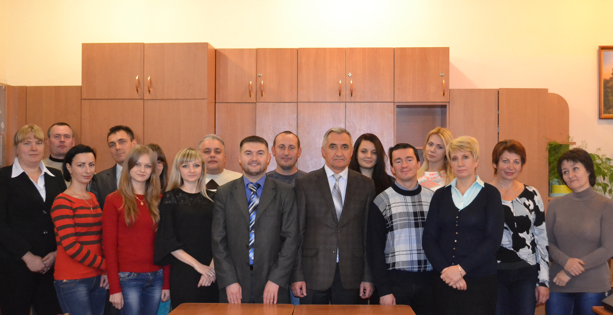
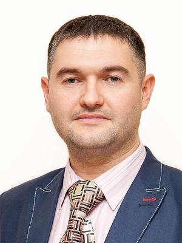

Кафедра Комп'ютерних наук

Освіта в галузі інформаційних технологій в Університеті має об’єктивні передумови, історію становлення та перспективи розвитку. У 2000 році була заснована кафедра комп’ютерних наук. І саме з 2000 року кафедра готує фахівців з розробки та тестування програмного забезпечення. На даний час кафедра комп’ютерних наук готує у галузі знань 12 "Інформаційні технології": • бакалаврів за спеціальністю 121 „Інженерія програмного забезпечення”; • магістрів за спеціальністю 121 „Інженерія програмного забезпечення”; • докторів філософії за спеціальністю 121 „Інженерія програмного забезпечення”. З 2018/2019 навчального року розпочинається набір на 2-х річну магістерську освітньо-наукову програму "Математичне та програмне забезпечення комп'ютерних систем". З року в рік кафедра активно розвивається завдяки продуктивній роботі її колективу. Викладачі кафедри не лише постійно освоюють нові методи навчання, що дозволяє максимально активізувати процес творчого осмислення студентами навчального практичного матеріалу, а і плідно працюють у науково-дослідній сфері. Викладачі кафедри щодня діляться зі студентами не просто знаннями, а вчать жити гідно. Наукова робота кафедри. Напрямки наукових досліджень викладачів кафедри: • Математичне макромоделювання складних об’єктів та процесів на основі аналізу інтервальних даних. • Розробка методів та засобів ідентифікації математичних моделей статичних та динамічних об’єктів. • Оптимізація складних обчислювальних процедур реалізації алгоритмів • Інтелектуальний аналіз даних. • Створення веб-орієнтованих програмних систем. • Оптимізація веб-ресурсів з метою підвищення їх відвідуваності. • Розробка кросплатформних мобільних додатків. Науково-дослідні проекти кафедри: Держбюджетні: Міжнародні: • "Співпраця між Україною та Румунією в галузі розподілених систем (COBURDIS)": 2006-2007 рр., № держреєстрації 0106U005307, науковий керівник – Дивак М.П. – спільний українсько-румунський проект з Західним Університетом м. Тімішоара, Румунія. • „Розробка теоретичних основ апаратного і програмного забезпечення для дослідження та моделювання широкого класу об’єктів методами аналізу інтервальних даних на базі дистрибутивної вимірювально-керуючої мережі”: 2003-2004 рр., № держреєстрації 0103U005903, науковий керівник – Дивак М.П. – спільний українсько-китайський проект з кафедрою автоматики, університет Ціньхуа, м. Пекін, Китай. Національні: • "Математичне та програмне забезпечення для класифікації тканин хірургічної рани в процесі операції на органах шиї": 2017-2018 рр., № держреєстрації 0117U000410, науковий керівник – Дивак М.П. • "Математичне та програмне забезпечення для контролю забруднення атмосфери автотранспортом": 2016-2018 рр., № держреєстрації 0116U005507, науковий керівник – Войтюк І.Ф. • „Теорія побудови та методи реалізації в реальному часі міждисциплінарних математичних моделей зміни стану складних об’єктів”: 2014-2015 рр., № держреєстрації 0114U000569, науковий керівник – Дивак М.П. • „Інформаційна технологія для ідентифікації і візуалізації зворотнього гортанного нерва в процесі хірургічної операції на щитовидній залозі”: 2012-2013 рр., № держреєстрації 0112U000078, науковий керівник – Дивак М.П. • „Математичні методи, інтервальні моделі та інформаційні технології для контролю забруднення атмосфери автотранспортом”: 2010-2011 рр., № держреєстрації 0110U001125, науковий керівник – Дивак М.П. • „Методи, апаратні та програмні засоби для дослідження та моделювання нестаціонарних розподілених об’єктів на основі інтервальних даних”: 2006-2008 рр., № держреєстрації 0106U000529, науковий керівник – Дивак М.П. Кафедральні: • "Математичне та програмне забезпечення складних систем в умовах структурної та параметричної невизначеностей": 2017-2021 рр., № держреєстрації 0117U000145, науковий керівник – Дивак М.П. • „Макромоделювання складних систем та процесів в умовах структурної невизначеності на основі неточних даних”: 2012-2016 рр. № держреєстрації 0111U010356, науковий керівник – Дивак М.П. • „Методи та засоби математичного моделювання складних систем на основі теоретико-множинного та інтервального підходів”: 2007-2011 рр., № держреєстрації 0106U012529, науковий керівник – Дивак М.П. • „Розробка теоретичних засад, алгоритмічного та програмного забезпечення моделювання технічних, екологічних та економічних систем на основі аналізу інтервальних даних”: 2002-2006 рр., № держреєстрації 0101U002565, науковий керівник – Дивак М.П. Госпдоговірні: • „Вдосконалення програмної системи підтримки діяльності Центру надання адміністративних послуг Тернопільської міської ради": жовтень 2017-грудень 2017 рр., № держреєстрації 0117U008833, науковий керівник – Пукас А.В., замовник – Тернопільська міська рада. • „Розширення функціоналу програмної системи підтримки діяльності Центру надання адміністративних послуг Тернопільської міської ради”: вересень 2016-грудень 2016 рр., № держреєстрації 0116U008541, науковий керівник – Пукас А.В., замовник – Тернопільська міська рада. • „Веб-орієнтована програмна система підтримки діяльності Центру надання адміністративних послуг Тернопільської міської ради”: вересень 2015-грудень 2015 рр., № держреєстрації 0115U004825, науковий керівник – Пукас А.В., замовник – Тернопільська міська рада. • „Макромоделювання якості грунтів як об’єкта із розподіленими параметрами в умовах інтервальної невизначеності”: липень 2014-грудень 2015 рр., № держреєстрації 0114U006089, науковий керівник – Пукас А.В., замовник – ФО-П Мадюдя А.І. • „Розподілена система контролю технологічного процесу виробництва гіпсокартону”: грудень 2012-червень 2013 рр., № держреєстрації 0112U003917, науковий керівник – Пукас А.В., замовник - ПП «Українські гіпсокартонні системи». • „Методи та засоби генерування тестів із застосуванням теорії онтологій”: травень 2011-жовтень 2011 рр., № держреєстрації 0111U006279, науковий керівник – Дивак М.П., замовник - Івано-Франківська філія ВНЗ ВМУРОЛ «Україна». • „Розробка методу ідентифікації дискретної динамічної моделі на основі інтервальних даних для управління процесами збуту хлібобулочної продукції” (вересень 2005-червень 2006 рр., № держреєстрації 0306U003833, науковий керівник – Дивак М.П., замовник - ПП Пипа О.А. Нові наукові та практичні результати, отримані викладачами кафедри при виконанні науково-дослідних робіт апробовані та опубліковані у міжнародних та вітчизняних фахових виданнях та матеріалах конференцій різного рівня. Більше 100 публікацій викладачів індексовані у реферативних базах світового рівня – Web of Science та Scopus. Активно виконується студентська наукова робота, до якої залучаються як молодші , так і старші курси. Результатом такої діяльності є щорічні перемоги у Всеукраїнському конкурсі студентських наукових робіт у різних секціях за профілем кафедри. Навчальний процес на кафедрi забезпечують 27 осіб, з них: • доктори наук – 3 особи, в т.ч. професори – 2 особи, доценти – 1 особа; • кандидати наук – 15 осіб, в т.ч. доценти – 11 осіб; • викладачі та асистенти – 9 осіб, • з них сумісники – 3 особи.Завідувач кафедри комп’ютерних наук
 Пукас Андрій Васильович, 1979 року народження, громадянин України, освіта вища, кандидат технічних наук, доцент. У 2001 році з відзнакою закінчив Тернопільську академію народного господарства (ТАНГ) за спеціальністю “Інформаційні системи в менеджменті”, а в 2002році закінчив з відзнакою центр підготовки магістрів ТАНГ за спеціальністю “Економічна кібернетика”. Стаж науково-педагогічної роботи – 15 років. З 2001 р. по 2002 р. працював методистом Управління нових форм навчання ТАНГ, з 2002 р. займається викладацькою діяльністю на посадах викладача, старшого викладача та доцента кафедри комп’ютерних наук. У 2007 р. захистив кандидатську дисертацію на тему: “Методи планування експериментів для оптимізації математичних моделей на основі інтервальних даних“ за спеціальністю 01.05.02 – математичне моделювання та обчислювальні методи (технічні науки) у Національному університеті «Львівська Політехніка». Вчене звання доцента кафедри комп’ютерних наук присвоєно у 2011 р. Пукас А.В. читає лекційні курси та веде практичні заняття з дисциплін “Системний аналіз та проектування комп’ютерних інформаційних систем”, “Системний аналіз” українською та англійською мовами, “Гнучкі методи розробки програмного забезпечення”. Здійснює керівництво дисертаційними, магістерськими та курсовими роботами. На даний час працює над докторською дисертаційною роботою «Теорія оптимізації обчислювальної складності алгоритмів моделювання статичних та динамічних систем в умовах інтервальної невизначеності». За час роботи на кафедрі брав участь як керівник, відповідальний виконавець та виконавець у виконанні 7 держбюджетних тем, 2 з яких були міжнародними, а також 6 НДР згідно господарських договорів. За період науково-педагогічної діяльності Пукасом А.В. опубліковано понад 70 наукових праць. Серед них більше 20 – у наукових фахових виданнях України, а також 5 – у зарубіжних періодичних виданнях, що входять у міжнародні науко-метричні бази даних Web of Science та Scopus (Scopus ID 8339656100, ResearcherID: B-6236-2016). Виконує керівництво студентською проблемною групою, серед досягнень якої 8 перемог у Всеукраїнському конкурсі студентських наукових робіт з напрямку "Інформатика і кібернетика" (1, 2 та 3 місця) та у студентській конференції ТНЕУ у 2008 р. Абітурієнту про спеціальність "Інженерія програмного забезпечення" Сьогодні не існує сфери діяльності людини, де б не використовувалися комп'ютери. Неможливо уявити систему державного управління, банківську систему, системи фінансового забезпечення, медицину, транспорт, системи екологічного моніторингу без використання інформаційних технологій та комп'ютерів. Системність проблем інформатизації та комп'ютеризації вимагає вироблення комплексного підходу до розвитку основних складових інформатики та обчислювальної техніки, якими є комп'ютерні науки, інженерія програмного забезпечення, інженерія комп'ютерного обладнання та інформаційних систем. Серед вказаних складових галузі інформатики та обчислювальної техніки найбільш перспективною є інженерія програмного забезпечення, яка в найближчі роки суттєвим чином впливатиме на розвиток індустрії інформаційних технологій в Україні. Це підтверджується рядом фактів. По-перше тенденція до швидкого збільшення кількості ІТ- компаній, в сфері розробки програмного забезпечення (ПЗ) і переміщення їх замовлень зі столиці в регіони, відкриття в цих регіонах своїх підрозділів. Зокрема, процес глобалізації економіки сприяв появі на українському ринку ІТ великої кількості аутсорсингових компаній, тобто таких, що задіюють у своїх проектах українських фахівців з програмної інженерії. По-друге висока рентабельність фірм по виробництву ПЗ та відносно невисокий рівень конкуренції, оскільки кожна фірма, як правило, знаходить свою нішу у цій сфері. Важливу роль у підготовці студентів за спеціальністю "Інженерія програмного забезпечення" відіграє співпраця кафедри з компаніями, які займаються промисловою розробкою програмного забезпечення, а саме можливість стажування студентів та викладачів. Іншою важливою складовою у якісній підготовці студентів є можливість використання ліцензованого програмного забезпечення компанії Microsoft. Фахівці з інженерії програмного забезпечення діють в сфері: дослідження, проектування, розробки, тестування та супроводження програмного забезпечення з урахуванням вимог щодо його ефективності, надійності, своєчасності та низької вартості, скрізь де є необхідність застосування комп'ютерних технологій. Студенти під час навчання отримують знання, необхідні для проектування та розробки програмного забезпечення: з формальних методів створення ПЗ; мов програмування та алгоритмізації; технологій програмування; операційних систем та архітектури ЕОМ; розробки розподілених систем та базових конструкцій паралелізму; баз даних та мережевих технологій; засобів проектування графічних та Web-інтерфейсів; дискретної математики та інженерних основ програмного забезпечення; методів моделювання та аналізу ПЗ; методів та стратегій проектування ПЗ; моделей життєвих циклів програм. Значна увага приділяється отриманню знань: в сфері верифікації, атестації та забезпечення якості програмного забезпечення; по управлінню програмними проектами. Велике значення приділяється професійній практиці, оскільки розміри проектів створення ПЗ сьогодні є настільки об’ємними, що їх розробка вимагає злагодженої командної роботи, яка передбачає знання технічних комунікацій, групової динаміки і психології, соціальної і професійної відповідальності. Серед інших особливостей програми підготовки: ранній початок викладання програмування і орієнтація на практичний його аспект, достатня кількість годин для вивчення професійної англійської мови та семінари по підготовці до здачі TOEFL. Випускники отримують кваліфікацію - бакалавр / магістр з інженерії програмного забезпечення. Місце працевлаштування випускників: ІТ-компанії, банки, державні установи, вищі навчальні заклади, дослідницькі центри, підприємства та організації, де є потреба розробки та супроводження програмного забезпечення. Після четвертого курсу підготовка здійснюється за освітнім ступенем “магістр”. Під час навчання студенти працюють у навчальних комп'ютерних лабораторіях, оснащених сучасними персональними комп'ютерами, які об'єднані в локальні мережі із безкоштовним необмеженим доступом через провідні та безпровідні мережі до Internet. Студенти-старшокурсники, які навчаються за обраною спеціальністю, мають можливість приймати участь в національних та міжнародних науково-дослідних проектах, які виконуються на кафедрі і тим самим набувати практичного досвіду створення програмного забезпечення для реальних систем. Кращі випускники за даною спеціальністю мають можливість продовжити навчання в аспірантурі, яка функціонує при кафедрі. Зарахування вступників проводиться відповідно до правил прийому ТНЕУ за сертифікатами незалежного оцінювання. Адреса: Вул. А.Чехова 8, 46003, Тернопіль, Україна, Навчальний корпус №6, ауд. 6405. Внутрішній телефон: 8 (0352) 23-60-29, 47-50-50*16-129 Сайт кафедри:http://dcs.tneu.edu.ua/